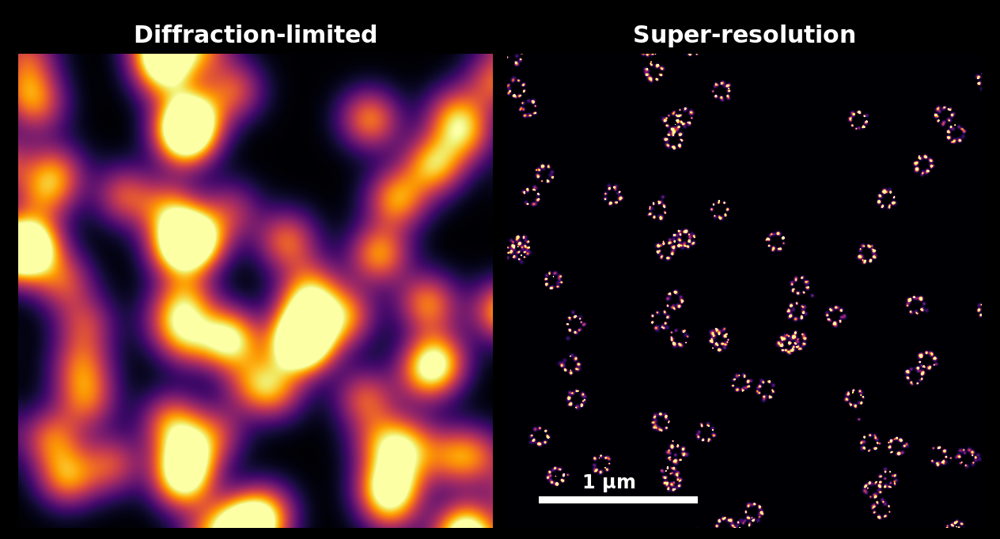
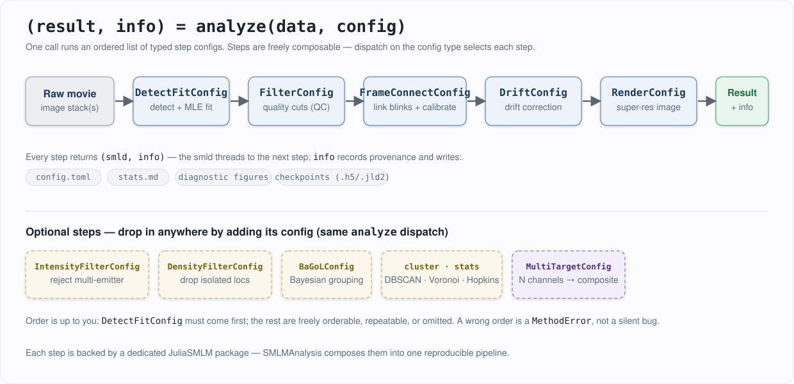

SMLMAnalysis.jl

The same single-molecule localizations rendered at the microscope's diffraction-limited resolution (left) and at the localization precision SMLMAnalysis achieves (right) — simulated 8-mer ring structures.
SMLMAnalysis is the entry point to the JuliaSMLM ecosystem. It turns raw single-molecule localization microscopy (SMLM) movies into super-resolution results by orchestrating the ecosystem's specialized packages — detection, fitting, filtering, frame connection, drift correction, rendering, Bayesian grouping, and clustering — behind one consistent interface:
(result, info) = analyze(data, config)You describe what analysis you want as a list of typed step configs; the package runs them in order, threads the data through, writes diagnostics and provenance to disk, and hands back the final localizations plus a record of everything that happened. Every step is backed by a dedicated, separately documented JuliaSMLM package — SMLMAnalysis is the layer that composes them into a reproducible pipeline.
How it works

An SMLM pipeline is a sequence of transformations on a localization set. In SMLMAnalysis each transformation is a step, configured by a typed struct (DetectFitConfig, FilterConfig, DriftConfig, …). A pipeline is just an ordered vector of those configs:
using SMLMAnalysis
config = AnalysisConfig(
camera = cam,
steps = [
DetectFitConfig(boxer = BoxerConfig(boxsize = 9, psf_sigma = 0.130),
fitter = GaussMLEConfig(psf_model = GaussianXYNBS())),
FilterConfig(photons = (500.0, Inf)),
FrameConnectConfig(max_frame_gap = 5),
DriftConfig(degree = 2),
RenderConfig(zoom = 20, colormap = :inferno),
],
outdir = "output/",
)
(result, info) = analyze(image_stacks, config)
result.smld # final localizations (a SMLMData.BasicSMLD)
info.step_infos # per-step history; stepinfo(info, :detectfit) looks one up by nameThe same steps can be run one at a time for interactive exploration — every analyze(smld, cfg) call returns a (smld, info) tuple you can inspect before deciding the next step:
(smld, _) = analyze(image_stacks, DetectFitConfig(camera = cam,
boxer = BoxerConfig(boxsize = 9, psf_sigma = 0.130)))
(smld, _) = analyze(smld, FilterConfig(photons = (500.0, Inf)))
(smld, _) = analyze(smld, RenderConfig(zoom = 20, colormap = :inferno)) # render step is a pass-through
(img, _) = render(smld, RenderConfig(zoom = 20, colormap = :inferno)) # get the image array directlySee The Pipeline Model for why this dispatch design makes steps freely composable, and Pipeline Steps for the catalog of everything analyze() can do.
Installation
Once SMLMAnalysis is registered in the Julia General registry:
using Pkg
Pkg.add("SMLMAnalysis")Until then (and for development against the local ecosystem), see Installation & Setup for the current install path.
The ecosystem
SMLMData (core types)
|
+-- SMLMBoxer ............ ROI detection
+-- GaussMLE ............. GPU-accelerated MLE fitting
+-- SMLMFrameConnection .. linking blinks + uncertainty calibration
+-- SMLMDriftCorrection .. fiducial-free drift correction
+-- SMLMRender ........... super-resolution rendering
+-- SMLMBaGoL ............ Bayesian grouping of localizations
+-- SMLMClustering ....... DBSCAN / Hierarchical / Voronoi / Hopkins
+-- SMLMSim .............. simulation + image generation
+-- MicroscopePSFs ....... PSF models
|
+-- SMLMAnalysis ......... integrates all of the aboveSMLMAnalysis depends on each of these and exposes their key types directly (so using SMLMAnalysis is usually all you need). It also adds several analysis steps of its own — quality filtering, intensity-based multi-emitter rejection, density filtering, and multi-channel composite rendering / cross-alignment / cross-correlation — that do not live in any single upstream package. See The JuliaSMLM Ecosystem for who does what and when to reach for a package directly.
Where to go next
- Run it now → Getting Started — a full pipeline with figures at every step.
- Understand the design → Concepts — the pipeline model, the ecosystem map, and the data model.
- Day-to-day tasks → Workflows — installing, running, multi-dataset and multi-channel acquisitions, I/O and resume, and adding your own step.
- Per-step reference → Pipeline Steps — one page per
analyze()step, each with its primary literature.
SMLMAnalysis.CheckpointSMLMAnalysis.SMLMAnalysisSMLMAnalysis.AbstractMultiTargetStepSMLMAnalysis.AnalysisConfigSMLMAnalysis.AnalysisInfoSMLMAnalysis.AnalysisResultSMLMAnalysis.BaGoLConfigSMLMAnalysis.BaGoLInfoSMLMAnalysis.CalibrationConfigSMLMAnalysis.CompositeRenderConfigSMLMAnalysis.CompositeRenderInfoSMLMAnalysis.CrossAlignConfigSMLMAnalysis.CrossAlignInfoSMLMAnalysis.CrossCorrConfigSMLMAnalysis.CrossCorrInfoSMLMAnalysis.DataSourceSMLMAnalysis.DensityFilterConfigSMLMAnalysis.DensityFilterInfoSMLMAnalysis.DetectFitConfigSMLMAnalysis.DetectFitInfoSMLMAnalysis.DriftConfigSMLMAnalysis.FilterConfigSMLMAnalysis.FilterInfoSMLMAnalysis.FrameConnectConfigSMLMAnalysis.IntensityFilterConfigSMLMAnalysis.IntensityFilterInfoSMLMAnalysis.MultiTargetConfigSMLMAnalysis.MultiTargetInfoSMLMAnalysis.MultiTargetResultSMLMAnalysis.RenderConfigSMLMAnalysis.StepInfoSMLMAnalysis.TeeLoggerSMLMAnalysis._apply_roiSMLMAnalysis._auto_cameraSMLMAnalysis._calc_inter_shiftsSMLMAnalysis._calc_max_driftSMLMAnalysis._calculate_modeSMLMAnalysis._columnar_to_smldSMLMAnalysis._compute_bin_statSMLMAnalysis._compute_crosscorrSMLMAnalysis._compute_intensity_pvaluesSMLMAnalysis._construct_emittersSMLMAnalysis._convolve_1dSMLMAnalysis._default_colorsSMLMAnalysis._detect_h5_formatSMLMAnalysis._empty_emittersSMLMAnalysis._estimate_bleaching_rateSMLMAnalysis._estimate_excitation_fieldSMLMAnalysis._estimate_koffSMLMAnalysis._estimate_p2SMLMAnalysis._estimate_p2_mixtureSMLMAnalysis._field_normalized_photonsSMLMAnalysis._fit_box_colorSMLMAnalysis._fit_gaussian_fieldSMLMAnalysis._fit_overlay_titleSMLMAnalysis._fmt_corrSMLMAnalysis._get_gaussmle_emitter_typesSMLMAnalysis._get_psf_sigma_boundsSMLMAnalysis._grid_figure_sizeSMLMAnalysis._inject_cameraSMLMAnalysis._is_config_structSMLMAnalysis._load_sourceSMLMAnalysis._normalize_dataSMLMAnalysis._p2_tail_massesSMLMAnalysis._plan_sample_framesSMLMAnalysis._prepare_stepSMLMAnalysis._produces_smldSMLMAnalysis._resolve_colorsSMLMAnalysis._resolve_file_sourcesSMLMAnalysis._resolve_psf_boundsSMLMAnalysis._rightmost_significant_peakSMLMAnalysis._ripley_edge_weightSMLMAnalysis._run_pipelineSMLMAnalysis._save_box_overlaySMLMAnalysis._save_box_overlaySMLMAnalysis._save_calibration_figuresSMLMAnalysis._save_calibration_plotSMLMAnalysis._save_config!SMLMAnalysis._save_continuous_drift_figureSMLMAnalysis._save_detectfit_sample_cacheSMLMAnalysis._save_drift_jitter_plotSMLMAnalysis._save_drift_model!SMLMAnalysis._save_filter_quality_figuresSMLMAnalysis._save_fit_overlaySMLMAnalysis._save_fit_overlay_from_cacheSMLMAnalysis._save_info!SMLMAnalysis._save_loc_per_frameSMLMAnalysis._save_multitarget_config!SMLMAnalysis._save_pipeline_config!SMLMAnalysis._save_shift_histogramSMLMAnalysis._save_step_smldSMLMAnalysis._select_sourcesSMLMAnalysis._smld_to_columnarSMLMAnalysis._spatial_bin_ratesSMLMAnalysis._toml_valueSMLMAnalysis._valley_thresholdSMLMAnalysis._with_datasetSMLMAnalysis._with_log_fileSMLMAnalysis._write_camera!SMLMAnalysis._write_composite_readme!SMLMAnalysis._write_config_fields!SMLMAnalysis._write_detection_frame_moviesSMLMAnalysis._write_info_field!SMLMAnalysis._write_residual_correlation!SMLMAnalysis.analyzeSMLMAnalysis.bagol_stepSMLMAnalysis.build_camera_from_mic_h5SMLMAnalysis.cache_dirSMLMAnalysis.composite_render_stepSMLMAnalysis.crop_cameraSMLMAnalysis.crop_imagesSMLMAnalysis.crossalign_stepSMLMAnalysis.crosscorr_stepSMLMAnalysis.densityfilter_stepSMLMAnalysis.detectfitSMLMAnalysis.detectfitSMLMAnalysis.detectfitSMLMAnalysis.driftcorrect_stepSMLMAnalysis.filter_stepSMLMAnalysis.frameconnect_stepSMLMAnalysis.intensityfilter_stepSMLMAnalysis.load_cacheSMLMAnalysis.load_mic_h5SMLMAnalysis.load_mic_h5_blockSMLMAnalysis.load_mic_h5_calibrationSMLMAnalysis.load_mic_h5_calibration_for_scmosSMLMAnalysis.load_mic_h5_infoSMLMAnalysis.load_pipeline_stateSMLMAnalysis.load_smart_h5SMLMAnalysis.load_smart_h5_frameSMLMAnalysis.load_smart_h5_infoSMLMAnalysis.load_smldSMLMAnalysis.n_datasetsSMLMAnalysis.n_frames_per_datasetSMLMAnalysis.render_stepSMLMAnalysis.save_cacheSMLMAnalysis.save_pipeline_stateSMLMAnalysis.save_smldSMLMAnalysis.smart_h5_to_arraySMLMAnalysis.smld_infoSMLMAnalysis.step_nameSMLMAnalysis.step_outdirSMLMAnalysis.stepinfoSMLMAnalysis.stepinfos